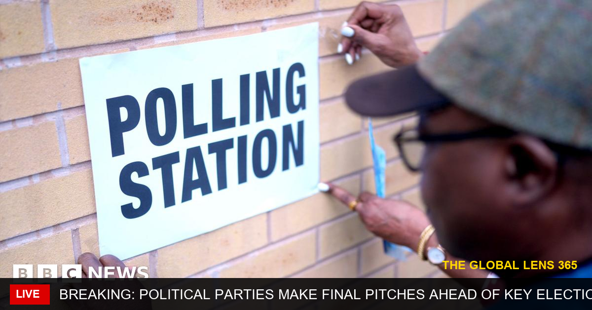

🔴 BREAKING | Election Fever: Final Showdown as Parties Make Last-Ditch Efforts to Sway Voters As the highly anticipated elections draw near, political parties are pulling out all the stops to win over undecided voters, with campaign promises and last-minute policy announcements taking center stage. With the fate of the nation hanging in the balance, the upcoming elections are poised to be a defining moment in the country's history, and the world is watching with bated breath to see which party will emerge victorious. 🌍 Follow @TheGlobalLens365 for updates. #WorldNews #Breaking #GlobalLens365